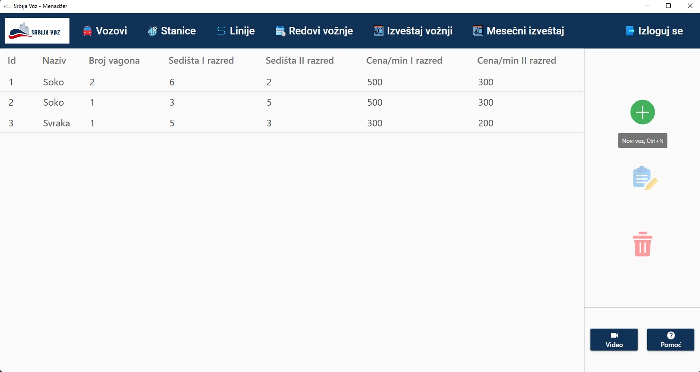
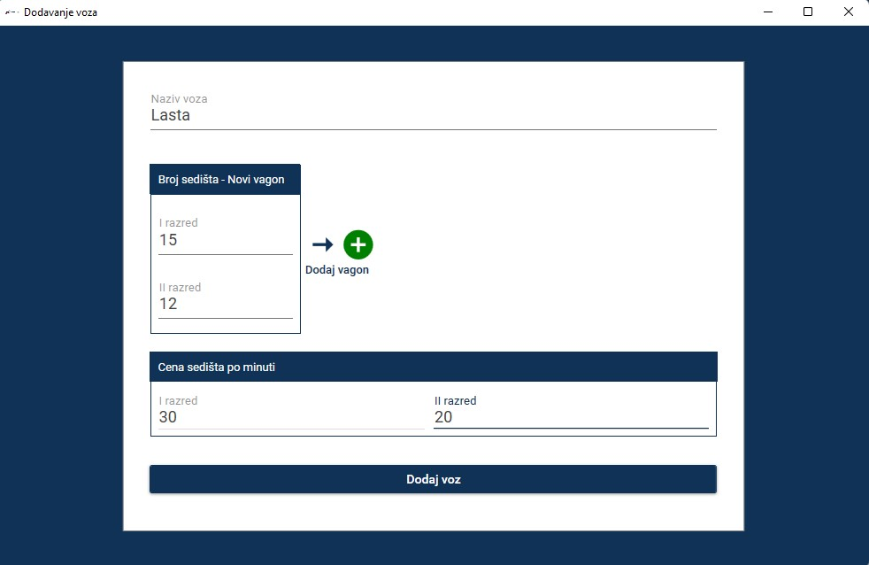
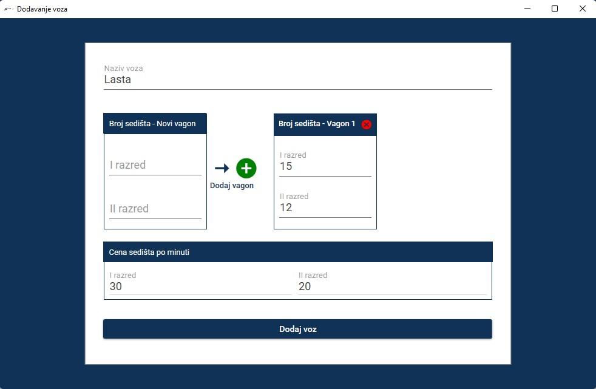
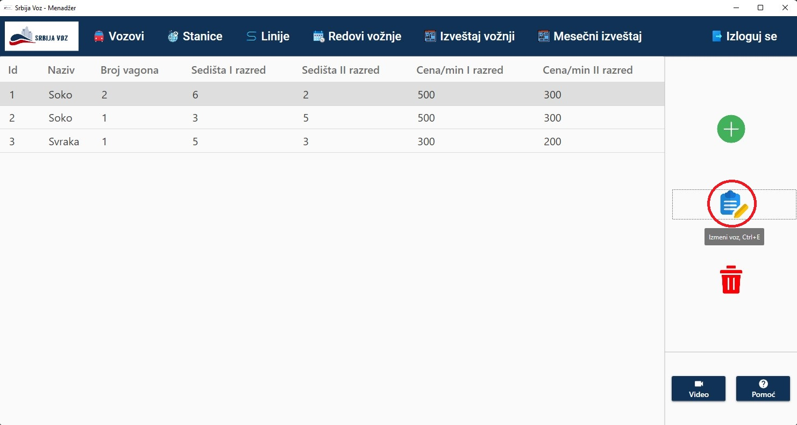
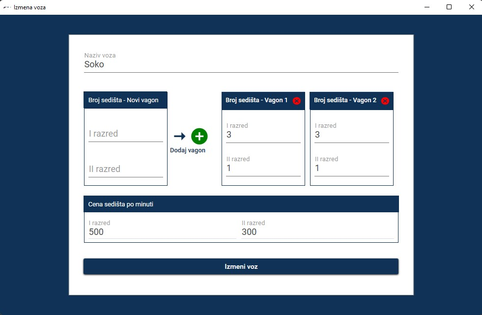
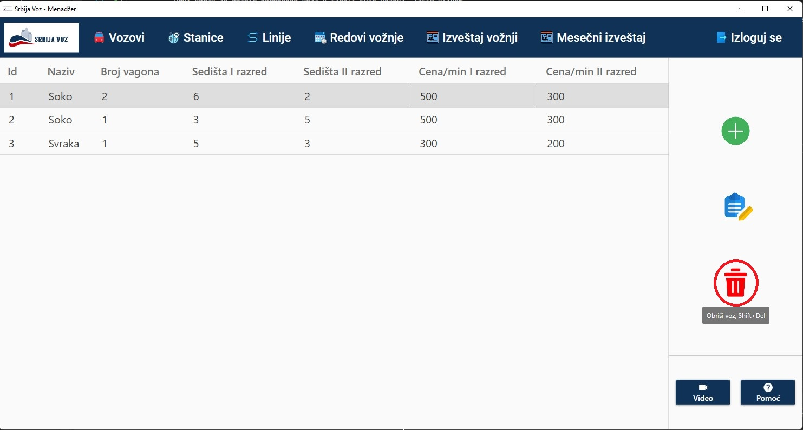
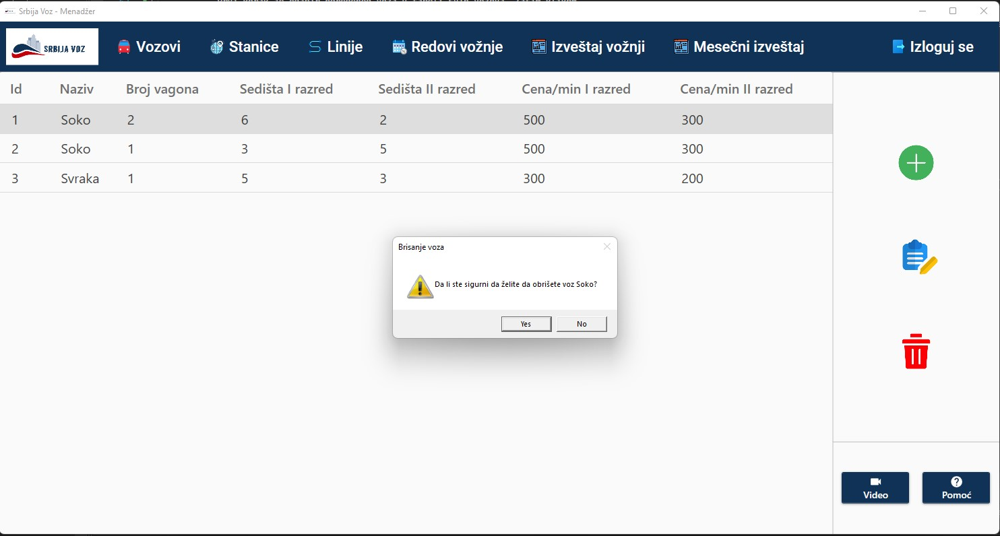

Prvi korak predstavlja odabir opcije "Novi voz" klikom na zeleno dugme ili
upotrebom prečice Ctrl+N. Dodavanje novog voza je moguće i prevlačenjem nekog već postojećeg voza na zeleno dugme. Ova opcija može biti korisna ukoliko želite da napravite voz identičan ili sličan nekom već postojećem vozu.

Nakon toga se otvara prozor za kreiranje novog voza gde je neophodno uneti naziv voza (1), cenu po minuti sedišta prve klase (2) i cenu po minuti sedišta druge klase (3). Vagon nije obavezno polje (4).
Na slici ispod su popunjeni svi podaci. Takodje su popunjeni i brojevi sedišta prve i druge klase vagona (nije obavezno). Klikom na zeleno dugme novi vagon će biti dodat.
Na slici ispod je napravljen novi vagon. Vagon je moguće i obrisati klikom na crvenu ikonicu. S obzirom na to da su uneti svi neophodni parametri voza, klikom na dugme "Dodaj voz" biće napravljen novi voz.
Prvi korak jeste odabir određenog voza u tabeli svih vozova. Zatim klikom na zaokruženo dugme sa desne strane ("Izmeni voz") ili prevlačenjem izabranog voza na pomenuto dugme ili upotrebom prečice Ctrl+E, otvara se prozor za izmenu izabranog voza. Na slici ispod se može videti da je selektovan prvi voz u tabeli.
Prozor za izmenu podataka izabranog voza je prikazan na donjoj slici. Sva polja u ovom prozoru se automatski popunjavaju sa podacima izabranog voza. Sada je moguće izmeniti željene podatke, te pritiskom na dugme "Izmeni voz" voz se ažurira.
Prvi korak je odabir voza u tabeli svih vozova. Zatim klikom na zaokruženo dugme sa desne strane ("Obriši voz") ili prevlačenjem izabranog voza iz tabele na pomenuto dugme ili upotrebom prečice Shift+Del, otvara se dijalog sa upozorenjem.
Ukoliko korisnik odluči da odustane od procesa brisanja voza treba da pritisne opciju "No", a ukoliko izabere opciju "Yes" izabrani voz će biti trajno obrisan.
